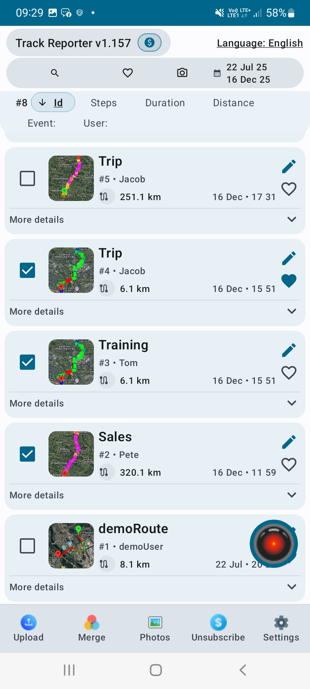

Create field reports with GPS proof.
Track Reporter records routes, timestamps, addresses, photos, markers and route statistics — then turns them into professional verification reports for field work, inspections, deliveries, patrols and maintenance visits.
Route Verification Report
Document created • Route Id • Field Work Verification
Summary
Data integrity

Locations and timestamps are recorded automatically. Report includes SHA-256 integrity hash generated from GPS and photo data.
route + area
with GPS markers
Everything your report needs.
The exported report is not just a route screenshot. It combines measurable route data, photo evidence, timeline points, addresses and integrity information.
A complete verification package.
Track Reporter reports can include route metadata, field work type, addresses, route metrics, coverage area, map preview, photo preview, timeline, markers, photo categories and evidence pages.
Photo Evidence
Created time • GPS coordinates • Evidence type • Address
Evidence item
Report Summary
Photo Category Summary
Verify routes
Record field movement with GPS positions, timestamps, distance, speed and coverage area.
Prove work with photos
Attach photo evidence to route points with GPS coordinates, addresses and evidence categories.
Export professional reports
Create clean PDF-style documentation for inspections, delivery verification and field activity reporting.
Track, review and report.
Use map view, route playback, photo gallery and route browser to review every recorded activity.



Start creating GPS-verified reports.
Install Track Reporter and turn routes, photos, timestamps and addresses into reliable field documentation.